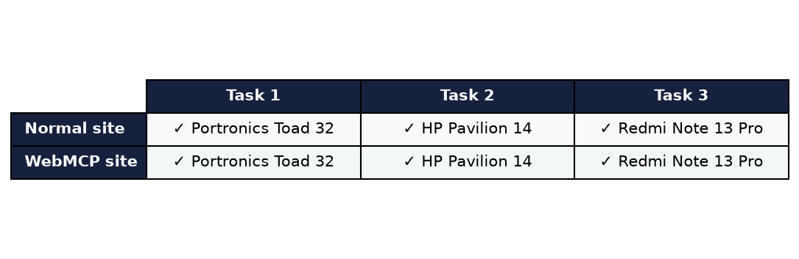

More and more, people ask AI assistants (like ChatGPT, Alexa-style bots, or browsing agents) to do things for them online: "Find me a wireless mouse under ₹1,500 and order it."
Today, an AI assistant visiting a normal website has to do this the hard way — the way a person with no eyes would: it reads the raw code of the page, guesses where the buttons are, opens every product page, and pieces the information together. It is slow, error-prone, and expensive (every page read costs AI "thinking power").
WebMCP is a new idea: the website itself offers the AI a tidy menu of ready-made actions — search products, get details, add to cart, checkout — like a proper service counter instead of a self-service warehouse. The AI asks for exactly what it needs and gets exactly that.
We built two identical online shops — same design, same 30 real products (10 mice, 10 laptops, 10 phones, Indian prices), same cart and checkout. The only difference:
| Shop | Address | What's different |
|---|---|---|
| Normal shop | demonomcp.converso.work | No special AI features |
| WebMCP shop | demowithmcp.converso.work | Offers AI a menu of 5 direct actions |
We then gave an AI assistant the same 3 shopping tasks on both shops:
| # | Task given to the AI | Correct answer |
|---|---|---|
| 1 | Find a wireless mouse under ₹1,500 (cheapest wins) | Portronics Toad 32 — ₹749 |
| 2 | Find the cheapest laptop rated 4.3★ or better | HP Pavilion 14 — ₹52,990 |
| 3 | Find the highest-rated phone under ₹30,000 and place the order | Redmi Note 13 Pro — ₹21,999 |
Both AI assistants completed all 3 tasks correctly and picked identical products — the experiment was fair. The difference was how much work each had to do:


| Parameter | Normal shop | WebMCP shop | Winner |
|---|---|---|---|
| Tasks completed correctly | 3 / 3 | 3 / 3 | Tie |
| Products chosen (correctness) | All 3 correct | All 3 correct | Tie |
| Data the AI had to read | 33,971 characters | 9,157 characters | WebMCP (−74%) |
| Approx. words the AI reads | ~8,500 | ~2,300 | WebMCP |
| Steps (requests) per run of 3 tasks | 10 | 13 | Normal (WebMCP pays a small one-time "introduce yourself" cost) |
| Time (same machine, same network) | 0.08 s | 0.08 s | Tie |

Think of two libraries. In the first, you're handed every book in the building and told "the answer is somewhere in here." In the second, a librarian asks "what do you need?" and hands you the one page you wanted. Both get you the answer. The second is dramatically less effort — and that's what WebMCP did for our AI shopper.
Prepared by Hermes Agent · Test data: /root/webmcp_demo/results.json · Shops: demonomcp.converso.work (normal) · demowithmcp.converso.work (WebMCP)